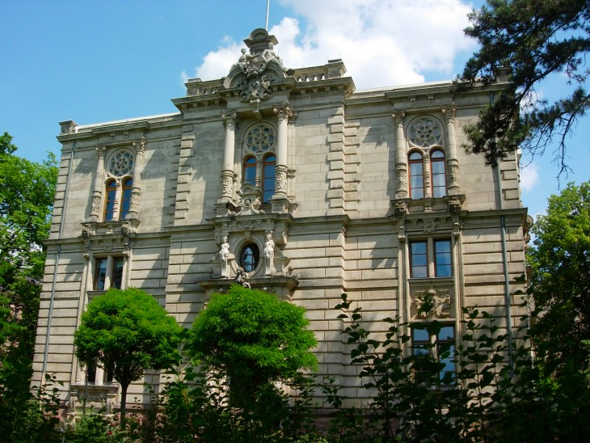
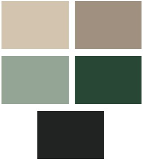
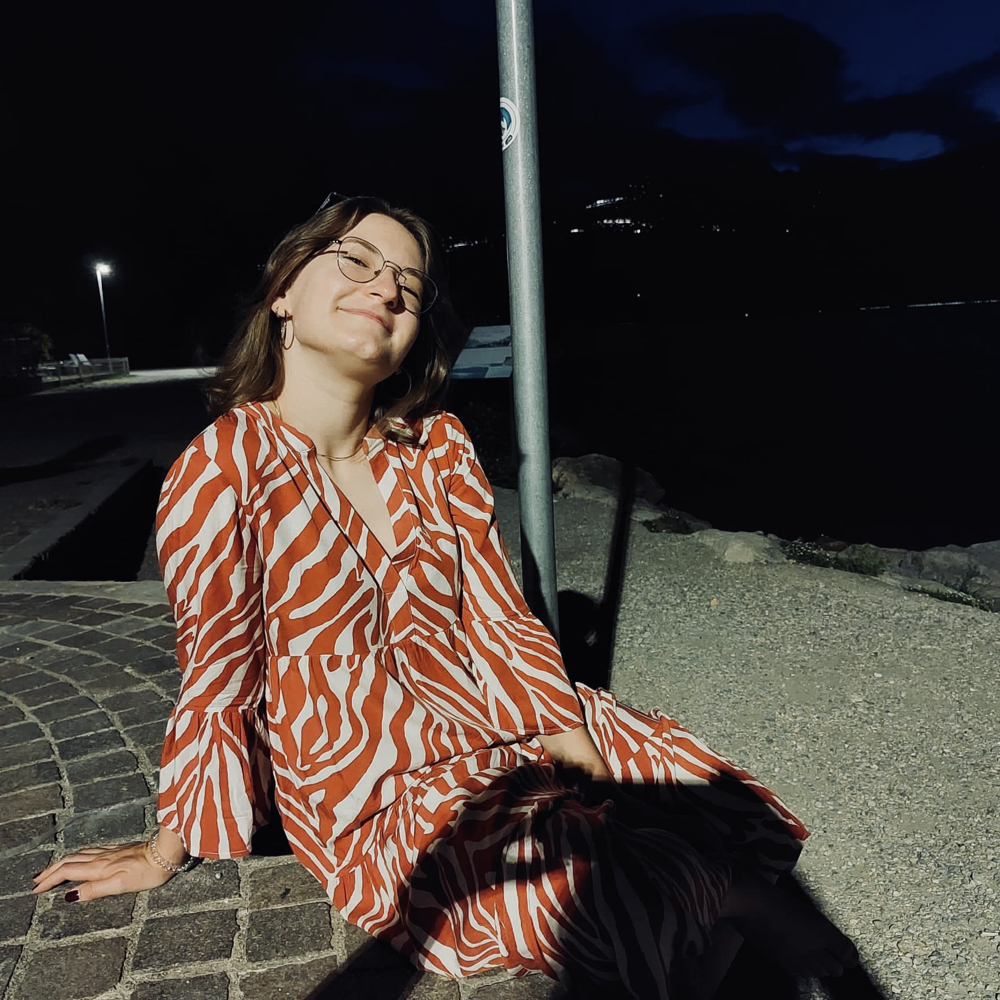

Diese Website führt auf einen Blick alle wichtigen Details auf, welche ihr zu unserem Hochzeitstag wissen müsst - egal ob es um Infos zum Dresscode, den ungefähren Ablauf oder Übernachtungsmöglichkeiten in der Umgebung geht.
This website lists all the important details you need to know about our wedding day - whether it's information about the dress code, the approximate schedule or accommodation options in the area. Feel free to use your trusted browsers' website translation feature if you are not a native german speaker.
28 Juli 2023
15:00 Uhr - 02:00 Uhr
Genauere Infos zum Ablauf, der Verpflegung und weitere Rahmendaten findet ihr einen Monat vor der Hochzeit auf dieser Website.Laufweg vom Hauptbahnhof Fürth: 5 Minuten
(U-Bahn U1, Zug, Bus)
Inmitten eines alten Gartens thront das 1890 fertiggestellte villenartige Domizil der Fürther Freimaurerloge und der Logensaal Fürth stellt das Prunkstück des altehrwürdigen Gebäudes dar.
Der Logensaal ist mit seinem idyllischen Garten für eine Sommerhochzeit wie geschaffen. Die umliegenden Jugendstilgebäude bieten die ideale Kulisse für Photos.
Der Empfang und die Trauung finden bei gutem Wetter im Außenbereich statt. Dort kann es im Sommer sehr warm werden. Daher heißt die Devise:
Weather-appropriate formal. Formelle Kleidung, ans Wetter angepasst.
Wir haben uns außerdem für ein paar kleine, und doch viel offen lassende Einschränkungen in der Farbe des Dress-Codes entschieden. So erhoffen wir uns schöne, stimmige Photos für alle!
Männer
Weißes/Schwarzes Hemd | Schwarzer Anzug/Schwarze Weste (optional) | Krawatte (optional).
Frauen
Eine Farbe aus folgendem Pool:
Das Logenhaus ist mittig in Fürth gelegen, nahe des Hauptbahnhofes und der Ubahn-Station. Daher hat man viele Übernachtungsmöglichkeiten in Fürth oder Nürnberg zur Verfügung. Hier sind einige gute Beispiele:
Wir haben eine tolle Photographin, die den Tag über unsere Hochzeitsgesellschaft begleiten wird. Sie wird hauptsächlich Momentaufnahmen machen, um so die echten Emotionen einzufangen - von der Trauung bis hin zur Party!
Uns ist es besonders wichtig, dass keiner selbst Bilder während der Trauungszeremonie macht. So haben wir sicherlich ein paar wunderschöne Momentaufnahmen im Nachgang!
Um so viele ungefilterte Aufnahmen wie möglich machen zu können, bitten wir euch darum, sie nicht mit speziellen Photowünschen eurerseits aufzuhalten.
Außerdem bitten wir darum, während der Trauungszeremonie selbst keine Photos mit eigenen Kameras zu machen. Davor und danach könnt ihr mit oder ohne uns natürlich so viele Bilder schießen wie ihr wollt.
Da wir bereits einen gut gefüllten Hausstand besitzen, haben wir uns gegen einen traditionellen Hochzeitstisch entschieden. Stattdessen werden wir am Empfang in der Location einen Tisch mit einem "Briefkasten" aufstellen. Wenn ihr uns etwas schenken wollt, sind Geldgeschenke in Briefumschlägen sehr willkommen.
Wir als Ehepaar haben unsere Trauzeugen als wichtige Ansprechpartner für die Vorbereitung und den Verlauf der Feier designiert. An diese könnt ihr euch wenden, wenn ihr beispielsweise eine Rede halten oder eine Einlage am Hochzeitstag durchführen wollt.
Markus Förstel | Trauzeuge | markus.foerstel@gmx.de
Julia Knörr | Trauzeugin | juli_kn@web.de
Bei allgemeinen Fragen könnt ihr euch gerne an kontakt@djukow.de wenden.
Wir freuen uns, unsere Hochzeit im engsten Kreis der Familie und Freunde verbringen zu können. Deshalb haben wir alle Gäste, die namentlich auf den Einladungen erwähnt sind, eingeplant.
Falls du also alleine eingeplant bist und dich damit sehr unwohl fühlen solltest, dann komm auf uns zu - vielleicht schaffen wir es ja, auch für deinen Lieblingsmenschen noch Platz zu schaffen.
Bitte gebt uns über folgendes Formular bis spätestens 14.05.2023 Bescheid, ob ihr an unserer Hochzeit teilnehmen könnt: